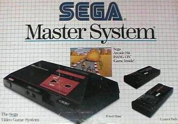

< Sega rediseñó su SG-1000 Mark III y le cambió el nombre a Master System. Más adelante la volvieron a rediseñar,
haciéndola más compacta, y se dió a conocer como Master System II,
quizás el rediseño más famoso en el mundo de los videojuegos.
Venía con un juego preinstalado, Alex Kidd in Miracle World,
que fue muy popular debido a que muchas tiendas lo ponían en
un televisor en sus escaparates. Fue la principal competidora
de la NES de Nintendo, la cual tenía un catálogo mucho más amplio,
pero era más pobre gráficamente.
>
